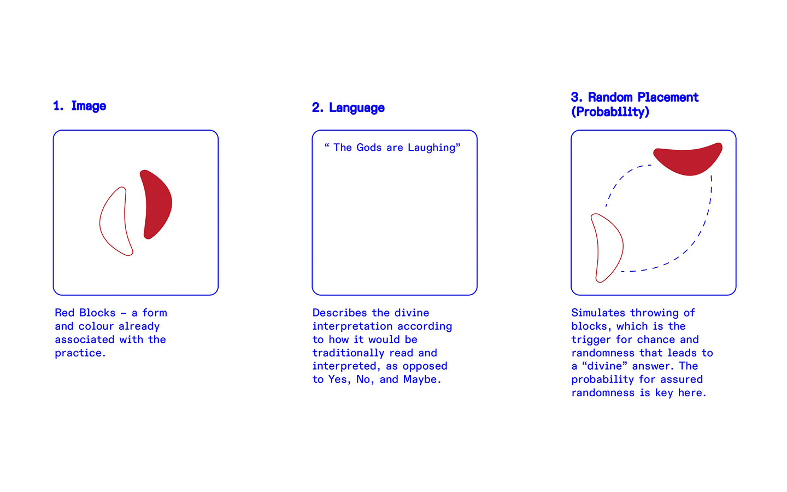

Catalogue of Making
This series of experiments and prototypes explores different ways to experiment with the intersection of magic and the machine.
Experiment 1:
Jiao Bei 2.0
In attempting to create the jiaobei digitally as a study of materiality in divination, I
discovered the endless possibilities for meaning-making that I can create with the same
mechanisms.
Jiaobei 2.0 thus invites people to consider how they choose to
receive
information/make decisions, particularly when it comes to digital interactions.
Jiaobei Divination in Taiwan - link
First iteration on p5.js – A simple simulation
Learnings from 1st iteration
Consider why each of these help make decisions differently. If I were to present the blocks as a black and white square, it would achieve the same outcome, but it would not bear the visual signifiers present that gives the divination its significance (specific to the individual).If I push this further, I would argue that this mechanism mirrors the way a computer makes decisions through a binary system – one we understand as 1s and 0s. If the binary system is truly left to chance, or instructed so, the computer then becomes an object where divination occurs infinitely.
V2.0
Can be used as:
1. Tool for self-reflection with
technology
2. To enable your bad decisions (adjust the probability to the answer
you
want!)
(Image) Jiaobei → 1/0
Experiment 2:
Noise Oracle
I next attempted to create a brand new divinatory process removed from existing cultural elements. Instead, the goal is to derive these elements purely from computational methods. This experiment therefore instrumentalises computer-generated imagery and machine learning for their ability to generate randomness.
In other words, if our ancestors were given current technology, how would they have used it for meaning-making like they did the stars?
Testing TeachableMachine with my face
Beginnings...
This activity started with a curiosity of how image machine learning worked. There was something quite human about the way it was trained to find certainty in what it saw (arguably because it is a system trained by humans).
Building the Oracle
A poetic framing of these images positions them as computer-generated maps of stars, which ancient astronomers used as a divine meaning-making apparatus. These images thus become a material source of that divine meaning will be derived from.
(Image Generation) I began with a p5.js sketch that generates a canvas of 1000 by 1000 pixels, each assigned B/W — creating a noise image that is almost statistically impossible to be generated twice.
(Image Recognition) I then trained a TeachableMachine model to recognise 3 sets of "stars" that I generated, praying it could recognise the devil in the details.
Interactive Iterations
V1 – The first interation was a website that allowed the upload of a personal image for meaning-making.
V2 – A conceptual installation draft – a machine doomed to find meaning in its own creation.